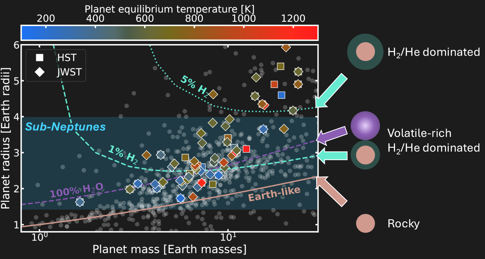
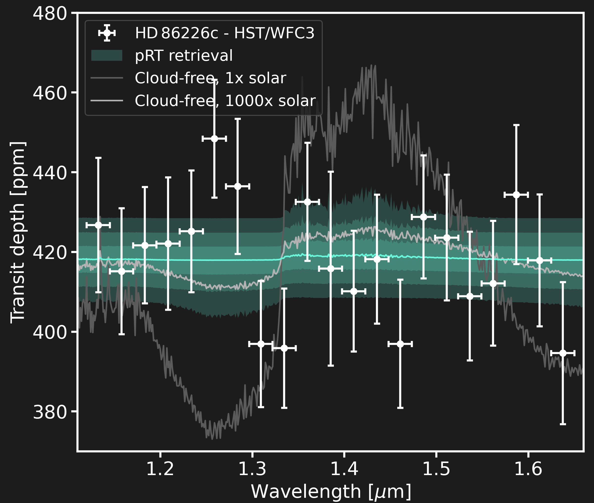
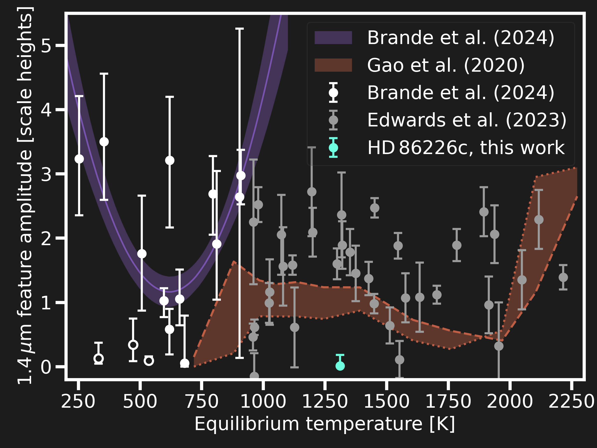
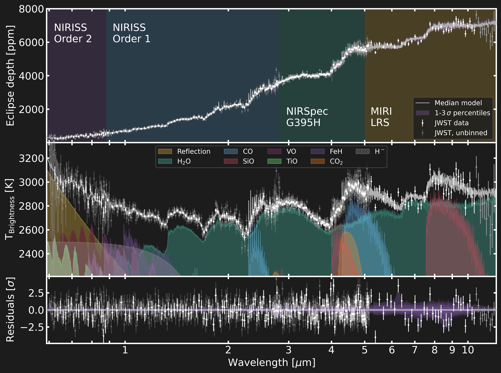
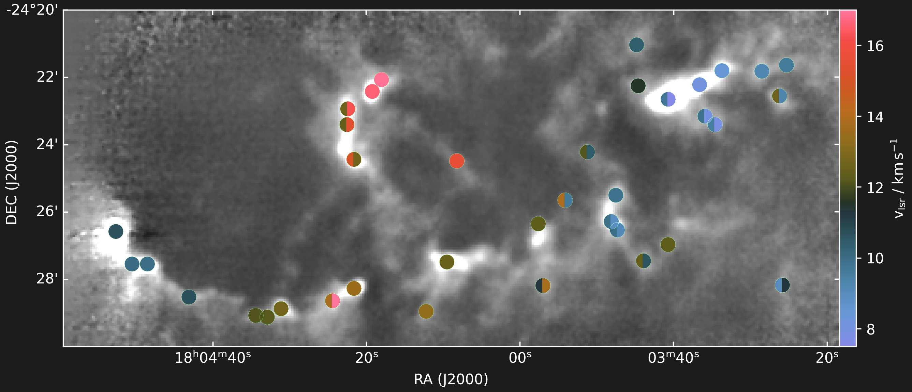
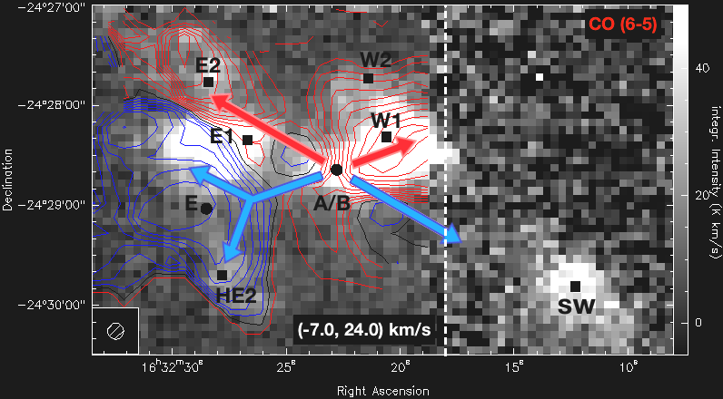
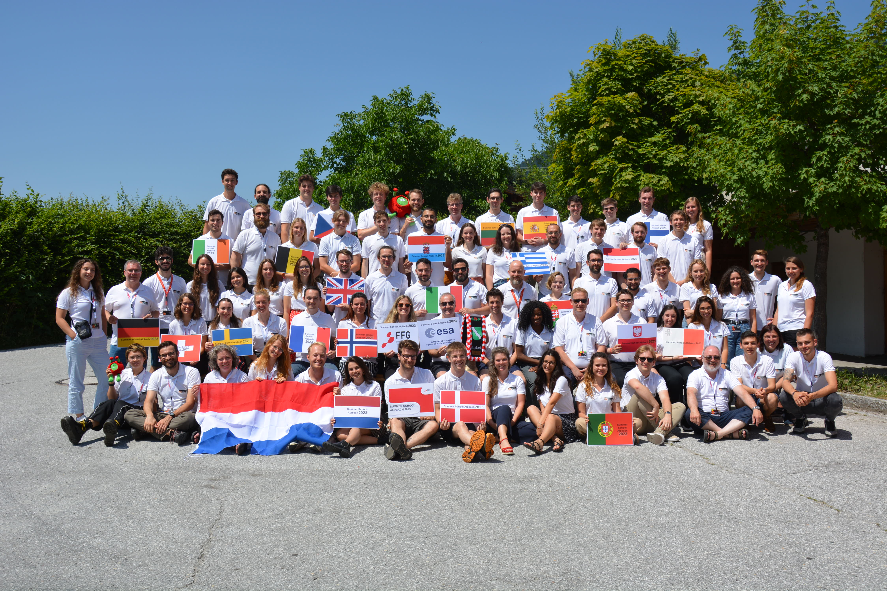

Research projects and Publications
You can find a selection of my research projects below. Enjoy the reading!
Demographic atmosphere trends in sub-Neptunes

My current research focuses on concluding the SPACE program. The Sub-neptune Planetary Atmosphere Characterization Experiment obtained HST spectra from nine sub-Neptune exoplanets across a physically motivated grid across planet radius and equilibrium temperature. Initially, this study was meant to inform JWST observations. We all know how observing schedules work some times, so we received the last SPACE spectrum well within JWST cycle 5. However, this allows us to include JWST spectra from over 15 additional Neptunes and sub-Neptunes into the analysis. Stay tuned about the results, and email me know if you are interested in an updated version of Yoni's cloud-trend plot!
Hot sub-Neptune HD 86226 c breaks cloudy trends


The full paper is linked here. Sub-Neptune exoplanets are the most abundant type of planet known today. As they do not have a Solar System counterpart, many open questions exist about their composition and formation. Here we characterize the hot (equilibrium temperature = 1300 K) sub-Neptune HD 86226 c. The planet is located in a special part of the sub-Neptune parameter space: Its high equilibrium temperature prohibits methane-based haze formation, increasing the chances for a clear atmosphere on this planet. Using nine transits with Hubble WFC3, we measured an unexpectedly featureless transmission spectrum between 1.1 and 1.7 μm. We find that the featureless spectrum could be due to metal enrichment of a cloudless atmosphere, or silicate (MgSiO3), iron (Fe), or manganese sulfide (MnS) clouds. Our results highlight that HD 86226 c does not follow the aerosol trend of sub-Neptunes found by previous studies. Stay tuned, the planet will observed with JWST (GO 7407, PI:Nixon)!
SiO on the dayside of WASP-121b? Yes, but how much?

First things first, click here to find the paper preprint. One path to understand how planets form is to link their present-day atmospheric composition to predictions from planet formation models. Traditional approaches based solely on C/O and overall metallicity are prone to degeneracies, but abundances of refractory species can provide a useful additional formation tracer for the hottest planets. We investigated the refractory abundance in the atmosphere of the ultra-hot Jupiter WASP-121 b, combining a new JWST MIRI/LRS observation with archival NIRSpec/G395H and NIRISS/SOSS data to obtain a panchromatic dayside emission spectrum from 0.6 to 12.5 μm. Our retrieval analysis detects the refractory tracer SiO gas at high confidence, in addition to previously detected volatile species. The atmosphere is enriched in volatile and refractory species, with enhanced refractory-to-volatile abundance ratios by roughtly a factor of 3-4 relative to new stellar abundance constraints from ESPRESSO data. In addition, we confirm the depletion of TiO and the need for an additional source of reflected light. Comparing our results with models of planet formation, we find that the measured enrichment pattern was shaped by accretion from multiple reservoirs, either through a mixture of solid and gas accretion interior to the water ice line or through continued solid accretion during inward migration from farther out in the disk.
The effects of stellar feedback on molecular clumps in the Lagoon Nebula (M8)

The Lagoon Nebula (M8) is host to multiple regions with recent and ongoing massive star formation, due to which it appears as one of the brightest H II regions in the sky. M8-Main and M8 East, two prominent regions of massive star formation, have been studied in detail over the past few years, while large parts of the nebula and its surroundings have received little attention. These largely unexplored regions comprise a large sample of molecular clumps that are affected by the presence of massive O- and B-type stars.
Using the IRAM 30-m telescope and APEX, we established an inventory of species observed towards 37 known molecular clumps in M8 and investigated their physical structure. We compared our findings for these clumps with the galaxy-wide sample of massive dense clumps observed as part of the APEX Telescope Large Area Survey of the Galaxy (ATLASGAL).
We find clear and widespread effects of stellar feedback on the molecular clumps in the Lagoon Nebula. While the radiation from the O- and B-type stars possibly causes fragmentation of the remnant gas and heats the molecular clumps externally, it also gives rise to extended photon-dominated regions on the clump surfaces. Despite this fragmentation, the dense cores within 38% of the observed clumps in M8 are forming a new generation of stars.
This study started as my master thesis, but is now published. Feel free to give it a read!
The molecular environment of the solar-type protostar IRAS 16293-2422

Studying the physical and chemical processes leading to the formation of low-mass stars is crucial for understanding the origin of our Sun and the Solar System.
We examined in detail the spatial structures and molecular abundances of material surrounding the very well-known low-mass binary protostar IRAS 16293-2422 and the prestellar core 16293E, which are embedded in the Lynds 1689 N dark cloud. Our new observations confirm the scenario of an outflow arising from IRAS 16293-2422 interacting with the prestellar core 16293E. We observe a large-scale velocity gradient across the molecular cloud which coincides with the rotation of the envelope around IRAS 16293-2422 reported previously in the literature. The newly derived column densities and temperatures for different species, combined with the molecular spatial distribution in all sources, indicate clear chemical differences between the protostellar source, the prestellar core and the shocked positions as a result of the diverse physical conditions at different locations in this region.
This started as a Bachelors thesis, but turned out to be a quite usefull overview paper of the region. Please have a look here!
Exodus: A mission to explore exoplanet evolution through understanding atmospheric escape

During the Alpbach Summer School 2023, we created Exodus, a space mission to directly image the escaping atmospheres of nearby exoplanets. The goal is to observe Neptune-like planets with orbital periods longer than 100 days and to link possible atmospheric escape to the stellar activity. This could help us to understand the population of outer Neptune exoplanets and the mechanisms involved in planetary mass loss. We further refined the mission concept during a concurrent engineering phase as part of the post-Alpbach Summer School Event. I'm happy to share that we published the full mission concept, which you can find here.